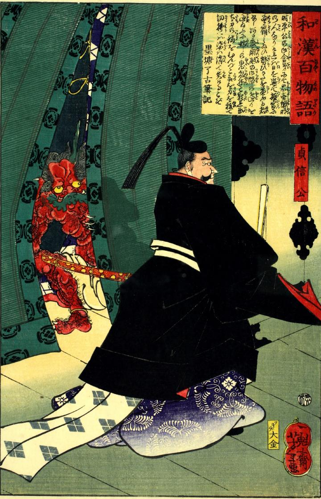

内裏を行く藤原忠平を見つめる鬼。筋骨たくましい赤い体には体毛がびっしりと生えている。帳から覗く手足には鋭い爪があり、頭部には角が生えている。
著作者：一魁齋芳年（月岡芳年）／出典：親書誌：U426_nichibunken_0072：貞信公；サダノブコウ／日付：2005／資源識別子：U426_nichibunken_0072_0001_0000
Copyright (c)2010- International Research Center for Japanese Studies, Kyoto, Japan. All rights reserved.